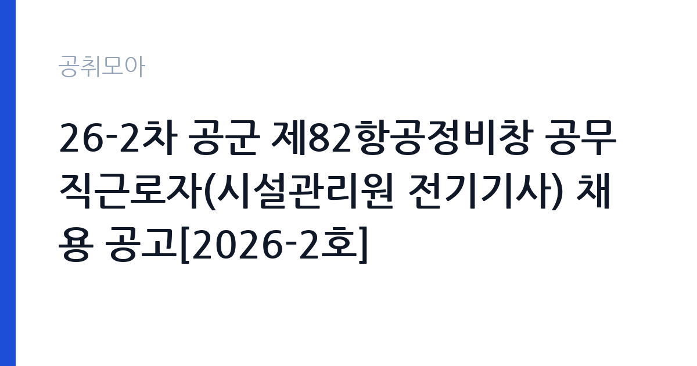

[국가기관] 26-2차 공군 제82항공정비창 공무직근로자(시설관리원 전기기사) 채용 공고[2026-2호]
국방부 국군조직 공군 공군군수사령부 · 충남 · 마감 2026-11-11 (D-16) · 출처 나라일터

한눈에 보는 모집 조건
| 기관 | 국방부 국군조직 공군 공군군수사령부 |
|---|---|
| 공고명 | 26-2차 공군 제82항공정비창 공무직근로자(시설관리원 전기기사) 채용 공고[2026-2호] |
| 고용형태 | 공무직 |
| 근무지 | 충남 |
| 게시일 | 2026-10-26 |
| 마감일 | 2026-11-11 (D-16) |
지원자격, 이렇게 읽으세요
- 공무직 3급 직무 1명
- 접수 ~2026-11-11 마감
- 세부 조건은 원문 공고문 확인
공무직 근로자는 공무원이 아니라 근로기준법이 적용되는 근로자이지만 기간의 정함이 없는 무기계약으로 채용되는 경우가 많아 정년까지 근무가 가능합니다. 채용은 공무원 시험과 달리 기관의 자체 전형으로 진행되고 인사 규정과 임금표를 적용받습니다. 이번 공고는 국방부 국군조직 공군 공군군수사령부에서 직접 진행하는 자체 전형으로, 응시자격과 제출서류는 공고문에 항목별로 제시됩니다. 운전 직무는 무엇보다 면허 종류와 실제 운전 경력이 기준입니다. 1종 보통 또는 1종 대형 면허를 요구하는 경우가 많고, 화물이나 버스 운전은 별도 자격이 필요합니다. 최근 3년 또는 5년 내 교통사고와 음주운전 이력이 없어야 한다는 조항이 자주 붙습니다. 운전 경력 증명서나 보험 가입 이력으로 이를 증빙해야 하므로 미리 발급받아 두십시오. 장거리 운행이 포함되면 건강 상태와 야간 운전 가능 여부도 확인합니다. 서류는 접수 마감 이후 보완이 되지 않으므로 자격 요건과 증빙 서류를 마감 전에 모두 갖춰야 합니다. 공고문에 명시된 우대 사항은 해당 여부를 확인해 증빙을 첨부해야 가점이 반영됩니다. 우대 사항에 해당하면 증빙을 반드시 첨부해야 하며, 누락하면 가점 없이 평가됩니다.
이 공고의 포인트
이 공고의 첫 번째 포인트는 고용 형태입니다. 무기계약으로 채용되면 정년까지 근무가 가능해 재계약 부담이 없습니다. 반대로 기간제로 채용되는 공고라면 계약 기간을 먼저 확인해야 합니다. 두 번째는 업무 범위가 명확하다는 점입니다. 운전 직무로 채용되므로 배치 이후 담당 업무가 크게 흔들리지 않습니다. 세 번째는 근무지입니다. 충남 지역 근무로 수도권 공고에 비해 지원자 분포가 넓지 않아 상대적으로 경쟁이 분산되는 경우가 있습니다. 재공고로 올라온 공고라 이전 차수 지원자와의 형평성 기준을 확인할 필요가 있습니다. 다만 선발 인원이 1명으로 많지 않아 자격을 갖춘 지원자가 몰리면 경쟁률이 높아질 수 있습니다.
전형은 어떻게 진행되나
채용 절차는 공고문에 안내된 순서대로 진행되며, 서류 접수 마감 후에는 추가 접수나 서류 보완이 이뤄지지 않는 것이 원칙입니다. 서류심사에서는 응시자격과 제출서류의 형식 요건을 기계적으로 확인하므로, 경력 증명서의 기간과 직무 내용이 공고의 요건과 정확히 맞아야 합니다. 면접은 지원자 수에 따라 집단면접과 개별면접으로 나뉘고, 직무 관련 질문과 상황 대응 질문이 함께 나옵니다. 합격자 발표는 개별 통보 또는 홈페이지 게시로 이뤄지며 이후 임용 절차가 진행됩니다. 제출서류 원본은 최종 단계에서 다시 요구되는 경우가 있어 사본과 함께 보관하십시오.
원문에서 확인한 전형 방식
공무직근로자(시설관리원) 채용 ○ 선발직급 : 공무직 3급 직무 ○ 고용형태 : 무기계약직 ○ 자격요건 : 자격증, 경력 등 ○ 접수기간 : 2026년 11월 2일 ~ 2026년 11월 11일(마감일 우체국 소인분까지 유효) ○ 응시방법 : 우편 접수(우편 접수 전, 접수사실 인지 위해 아래번호로 전화부탁드립니다. 평일 08:30 ~ 11:30 / 13:00 ~ 16:30 ○ 문의처 : 041-689-1512(82창 계획운영과 인사담당)
이런 분께 추천해요
- 요구 면허를 보유하고 운전 경력이 충분한 분
- 교통사고·음주운전 이력이 없는 분
- 차량 점검과 운행 기록을 성실히 관리하는 분
지원 전 체크리스트
- 응시자격 요건과 경력 기준을 충족하는가 — 경력은 증명서로 입증해야 합니다
- 무기계약 여부와 정년 기준을 공고문에서 확인했는가
- 제출서류 목록을 모두 준비했는가 — 누락 시 서류 단계에서 탈락합니다
- 접수 마감 2026-11-11 이전에 접수 방식을 확인해 제출했는가
모집 일정과 제출 타이밍
공고 게시일은 2026-10-26, 접수 마감은 2026-11-11입니다. 준비 기간은 약 16일로 서류 준비와 자격 증빙을 함께 처리하기에는 넉넉하지 않은 편입니다. 첫 이틀 안에 공고문과 첨부 서식을 내려받아 요건을 확인하고 남은 기간에 증빙 서류를 발급받는 일정이 현실적입니다. 면접은 서류 합격자 발표 후 짧은 간격으로 진행되는 경우가 많으므로 서류 제출과 동시에 면접 준비를 시작하는 편이 안전합니다. 마감일에는 접수 시스템이 몰리므로 하루 전까지 제출을 마치는 것이 좋습니다. 임용 예정일이 빠르게 잡히는 공고이므로 현재 일정과 겹치지 않는지 미리 확인하십시오. 충남 근무지는 산업단지와 농촌 지역이 섞여 있어 통근 조건이 공고마다 다릅니다. 마감까지 여유가 있어 자격 요건을 천천히 확인하고 준비할 수 있습니다. 선발 인원이 한두 명 수준이라 지원자 개개인의 서류 완성도가 그대로 평가에 반영됩니다.
직무 이해하기: 국가기관
지방자치단체는 지역 행정과 복지, 시설 운영을 담당합니다. 부서별로 사업을 수행하고 결원이나 신규 사업에 따라 임기제와 기간제 인력을 채용합니다. 조례와 자체 인사 규정에 따라 채용 절차가 진행됩니다. 운전 직무는 기관 차량을 운행해 사람이나 물품을 옮기는 일입니다. 출발 전 차량 상태와 연료, 안전 장비를 점검하고 운행 일지를 기록합니다. 업무용 승용차, 승합차, 화물차, 청소 차량 등 담당 차량에 따라 필요한 면허가 달라집니다. 목적지와 시간이 매일 달라지므로 일정 관리와 대기 시간이 업무의 상당 부분을 차지합니다. 사고 예방과 차량 관리, 승객 응대 태도가 평가에 포함됩니다. 업무는 혼자 처리하기보다 부서 단위로 나눠 진행되므로 담당 구역과 협업 범위를 입사 초에 확인하는 것이 중요합니다. 업무 강도와 근무 시간대는 부서 배치에 따라 달라지므로 면접에서 확인하는 것이 가장 정확합니다.
자기소개서 작성 팁
운전 지원서의 핵심은 무사고와 책임감입니다. 운전 경력 연수, 주행 거리, 무사고 기간을 수치로 제시하십시오. 차량 점검을 습관적으로 해온 방식이나 위험 상황에서 사고를 피한 경험을 구체적으로 쓰면 설득력이 높아집니다. 승객이나 이용자 응대 경험이 있다면 서비스 태도의 근거로 연결하십시오. 문항별 글자 수 제한을 먼저 확인하고, 각 문항의 첫 문장에 결론을 배치하는 방식이 읽기 쉽습니다. 지원 동기는 기관의 어떤 사업에 기여하겠다는 한 문장으로 시작하고, 이어서 본인의 경험을 근거로 붙이십시오. 감점을 피하려면 다른 기관에 보낼 수 있는 범용 문장을 그대로 쓰지 않는 것이 중요합니다. 기관 이름과 사업명이 문장 안에 자연스럽게 들어가야 준비도가 드러납니다.
면접 준비 포인트
면접에서는 안전 운전 습관과 상황 대응을 봅니다. 사고가 났을 때 어떤 순서로 조치할지, 승객이 시간을 지키지 않을 때 어떻게 대응할지, 차량 고장 시 어떻게 처리할지 묻습니다. 차량 관리 기록을 어떻게 해왔는지 구체적으로 답하면 신뢰를 줍니다. 무사고 경력과 장거리 운행 경험은 강점입니다. 답변은 상황, 판단, 조치의 순서로 정리하면 전달이 분명해집니다. 모르는 질문에는 모른다고 밝히고 확인 방법을 제시하는 편이 억지 답변보다 낫습니다. 마지막에는 근무 의사와 함께 2026-11-11 이후 일정에 언제든 응할 수 있다는 점을 전달하십시오. 면접은 공고문에 적힌 직무 내용을 얼마나 이해하고 있는지 확인하는 질문으로 시작하는 경우가 많으니, 모집분야 문구를 그대로 읽어 두는 것이 도움이 됩니다.
급여·근무조건 읽는 법
국방부 국군조직 공군 공군군수사령부의 구체적인 보수 수치는 이 공고 원문의 처우 항목과 보수표에서 확인해야 합니다. 공시 자료로 확인되지 않은 금액은 이 글에서 추정해 제시하지 않습니다. 운전 직무의 보수는 기관 임금표에 따른 기본급과 각종 수당으로 구성되며, 장거리·야간 운행이 있으면 여비와 초과근무수당이 추가됩니다. 무기계약직이면 정년까지 근무가 가능하고 기간제라면 계약 기간이 정해집니다.차량 유지와 유류비를 기관이 부담하는지 공고문에서 확인해야 합니다. 세부 금액은 원문 보수표에 있습니다. 2026년 적용 최저임금은 시급 10,320원, 월 환산 2,156,880원(주 40시간·209시간 기준)입니다. 고용노동부 고시 제2025-47호로 확정된 금액입니다. 공고문에 금액이 제시되지 않은 항목은 원문 보수표나 처우 설명에서 확인해야 하며 확인되지 않은 수치는 쓰지 않는 것이 원칙입니다. 비교할 때는 월 급여뿐 아니라 상여·명절휴가비·복지포인트·초과근무수당까지 포함한 연간 총액으로 계산하십시오. 기간제라면 계약 기간 동안의 총액을, 무기계약이라면 호봉 상승과 정년까지의 누적 소득을 기준으로 판단하는 편이 정확합니다.
자주 묻는 질문
- 선발 인원은 몇 명인가요?
공고문 기준 1명입니다. 직종별로 인원이 나뉘는 경우가 있으니 모집분야 항목을 함께 확인하십시오. - 근무지는 어디인가요?
충남 지역의 국방부 국군조직 공군 공군군수사령부 소속 근무지입니다. 세부 주소와 출퇴근 조건은 원문 공고문에서 확인할 수 있습니다. - 보수는 얼마인가요?
채용 신분(공무직)과 기관 임금 규정에 따라 정해지며 구체적인 금액은 공고문 처우 항목에 제시됩니다. 금액이 공개되지 않은 경우에는 원문의 보수표를 확인하십시오.
함께 보면 좋은 공고
[국가기관] 제2026-1회 국립한국교통대학교 지역성장 인재양성체계(앵커) 초광역 성장엔진 인재육성사업 전담인력 신규채용 공고 — 마감 2026-11-03[국가기관] 2026년 제8회 서천우체국 기간제 상시계약집배원(농어촌) 채용 계획서 — 마감 2026-11-03[국가기관] 전북대학교 기획처 연구원(기간제 계약직원) 채용 공고 — 마감 2026-11-04출처: 나라일터 공개정보를 바탕으로 공취모아가 정리한 안내글입니다. 모집 조건·일정은 변경될 수 있으니 지원 전 반드시 원문 공고문을 확인하세요. 본 글은 정보 제공용이며 합격을 보장하지 않습니다.